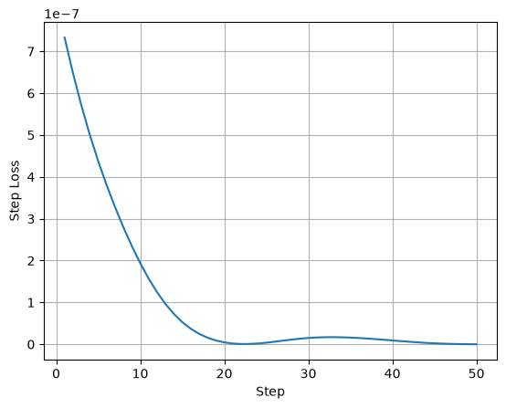

Online Training
Other examples have illustrated some of the capabilities that are
available with the implemented in JAX. One additional JAX
transformation that has not yet been used is jax.grad(). Because
the base models are implemented in JAX, we can take gradients through
multiple simulation time steps, training a parameterization online
through a live simulation, as opposed to training on static snapshots.
Some existing work has explored the impact of this training approach with QG models implemented in PyTorch. Here we provide a sketch of an online training setup using Equinox for neural networks and Optax for optimizers.
%env JAX_ENABLE_X64=True
import functools
import jax
import jax.numpy as jnp
import numpy as np
import equinox as eqx
import optax
import matplotlib.pyplot as plt
import pyqg_jax
env: JAX_ENABLE_X64=True
To carry out our training we will make use of several elements demonstrated in other examples. In particular:
Operator1from “Coarsening States”NNParamandmodule_to_singlefrom “Implementing a Parameterization”
In addition to the high-resolution stepped model (size 128), the
network, and the coarsening operator we also configure an Adam optimizer to train our network. For more information on combining
these optimizers with Equinox, consult the Equinox
documentation and the Optax
documentation. Note that
Optax provides a separate object, here optim_state, representing the
state of the optimizer that must be updated as a part of training.
DT = 3600.0
LEARNING_RATE = 5e-4
big_model = pyqg_jax.steppers.SteppedModel(
model=pyqg_jax.qg_model.QGModel(
nx=128,
ny=128,
precision=pyqg_jax.state.Precision.SINGLE,
),
stepper=pyqg_jax.steppers.AB3Stepper(dt=DT),
)
coarse_op = Operator1(big_model.model, 32)
# Ensure that all module weights are float32
net = module_to_single(NNParam(key=jax.random.key(123)))
optim = optax.adam(LEARNING_RATE)
optim_state = optim.init(eqx.filter(net, eqx.is_array))
With our network and optimizer initialized we generate several sample
states to represent training data. These states are generated at the
high resolution of size 128, and coarsened to the low resolution of
size 32. These small states form our training targets, target_q. In
a real application, these reference trajectories would likely be
pre-computed and loaded from disk.
Note that we do not generate any explicit forcing targets here since we will be supervising on the states directly.
@functools.partial(jax.jit, static_argnames=["num_steps"])
def generate_train_data(seed, num_steps):
def step(carry, _x):
next_state = big_model.step_model(carry)
small_state = coarse_op.coarsen_state(carry.state)
return next_state, small_state.q
_final_big_state, target_q = jax.lax.scan(
step, big_model.create_initial_state(jax.random.key(seed)), None, length=num_steps
)
return target_q
target_q = generate_train_data(123, num_steps=100)
Next we provide a function to roll out a trajectory starting from some
initial state. In this case we provide the state as a bare JAX array and have to package it into a model state. Another
example of this process is included in “Basic Time Stepping.”
See “Implementing a Parameterization” for another example of using a neural
network parameterization.
def roll_out_with_net(init_q, net, num_steps):
@pyqg_jax.parameterizations.q_parameterization
def net_parameterization(state, param_aux, model):
assert param_aux is None
q = state.q
# Scale states to improve stability
# This 1e-6 is for illustration only
q_in = (q / 1e-6).astype(jnp.float32)
q_param = net(q.astype(jnp.float32))
return 1e-6 * q_param.astype(q.dtype), None
# Extrace the small model from the coarsener
# Then wrap it in the network parameterization and stepper
# Make sure to match time steps
small_model = pyqg_jax.steppers.SteppedModel(
model=pyqg_jax.parameterizations.ParameterizedModel(
model=coarse_op.small_model,
param_func=net_parameterization,
),
stepper=pyqg_jax.steppers.AB3Stepper(dt=DT),
)
# Package our state
# First, package it for the base model
base_state = small_model.model.model.create_initial_state(
jax.random.key(0)
).update(q=init_q)
# Next, wrap it for the parameterization and stepper
init_state = small_model.initialize_stepper_state(
small_model.model.initialize_param_state(base_state)
)
def step(carry, _x):
next_state = small_model.step_model(carry)
# NOTE: Be careful! We output the *old* state for the trajectory
# Otherwise the initial step would be skipped
return next_state, carry.state.model_state.q
# Roll out the state
_final_step, traj = jax.lax.scan(
step, init_state, None, length=num_steps
)
return traj
We provide a function using the above to roll out a trajectory at the
low resolution and compute errors against the reference trajectory
target_q. In this case we use a simple MSE loss for training. We
also use Equinox’s “filtered” transforms (equinox.filter_jit(),
equinox.filter_value_and_grad()) since these interact more naturally with the
Equinox neural network modules.
Note
Online training with long rollouts may lead to out-of-memory errors.
One solution is to use jax.checkpoint() inside the scan to save memory through recomputation.
An implementation of this is available in
powerpax.checkpoint_chunked_scan(), or see this
sample code
for a starting point.
def compute_traj_errors(target_q, net):
rolled_out = roll_out_with_net(
init_q=target_q[0],
net=net,
num_steps=target_q.shape[0],
)
err = rolled_out - target_q
return err
@eqx.filter_jit
def train_batch(batch, net, optim_state):
def loss_fn(net, batch):
err = jax.vmap(functools.partial(compute_traj_errors, net=net))(batch)
mse = jnp.mean(err**2)
return mse
# Compute loss value and gradients
loss, grads = eqx.filter_value_and_grad(loss_fn)(net, batch)
# Update the network weights
updates, new_optim_state = optim.update(grads, optim_state, net)
new_net = eqx.apply_updates(net, updates)
# Return the loss, updated net, updated optimizer state
return loss, new_net, new_optim_state
We use the components we have to run a short training loop and report the loss after each step. The training steps are all JIT compiled.
For the training function above, batch has shape (batch_size, num_time_steps, nz, ny, nx). Each batch should have at least two time
steps otherwise the parameterization will not be evaluated in the
resulting trajectory because in the sample here the evaluated
trajectory includes the unmodified initial step.
BATCH_SIZE = 8
BATCH_STEPS = 10
assert BATCH_STEPS >= 2
np_rng = np.random.default_rng(seed=456)
losses = []
for batch_i in range(50):
# Rudimentary shuffling in lieu of real data loader
batch = np.stack(
[
target_q[start:start+BATCH_STEPS]
for start in np_rng.integers(
0, target_q.shape[0] - BATCH_STEPS, size=BATCH_SIZE
)
]
)
loss, net, optim_state = train_batch(batch, net, optim_state)
losses.append(loss)
if (batch_i + 1) % 5 == 0:
print(f"Step {batch_i + 1:02}: loss={loss.item():.4E}")
Step 05: loss=4.3754E-07
Step 10: loss=1.9382E-07
Step 15: loss=5.2962E-08
Step 20: loss=4.5459E-09
Step 25: loss=3.7812E-09
Step 30: loss=1.5082E-08
Step 35: loss=1.5976E-08
Step 40: loss=9.1506E-09
Step 45: loss=2.3292E-09
Step 50: loss=8.1020E-11
plt.plot(np.arange(len(losses)) + 1, losses)
plt.xlabel("Step")
plt.ylabel("Step Loss")
plt.grid(True)
